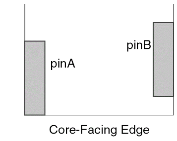
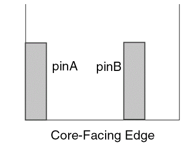
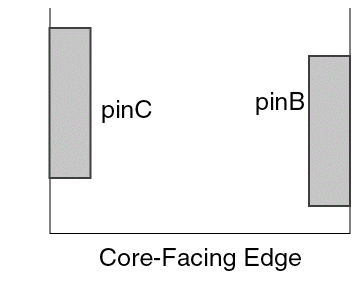
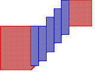
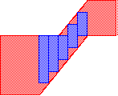
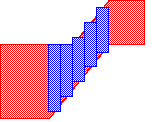

5
Abstract Step
This chapter describes the third stage of the abstract generation process: the Abstract step. Abstract Generator performs the following functions during the Abstract step:
To access the Running step Abstract form, select one or more cells in the main window and click the Abstract button. Alternatively, select Flow – Abstract. This opens the Running step Abstract form. You can select the options you need on this form and click the Run button. The Percent Complete message box reports the progress of the step.
If there are no valid Pins or Extract views for a cell, Abstract Generator automatically runs the Pins and Extract steps prior to running the Abstract step. For information about the Pins and Extract steps, see Pins Step and Extract Step.
When the Abstract step is complete, Abstract Generator places a symbol against the cell in the Cell pane to indicate the status of the Abstract view that was created. For information about these icons, see Viewing Status Information.
This chapter describes the following tabs on the Running step Abstract form:
The chapter also discusses the following:
- Retaining Layout Information in the Abstract View
- Creating Fill Blockages Automatically on Specific Layers
- Bus Annotation in Abstract Generator
- Supporting EXCEPTPGNET LEF Attribute
- Supporting Layout Dual View
- Support for Copying Mixed Signal Routing Constraints from Layout to Abstract View
- Suppressing Messages Issued by Abstract Generator
In the Running step Abstract form, use the radio buttons on the left to navigate the options pages for the different steps and bins you are using.
For information about the other abstract generation steps, see the following:
Multi-Patterning Technology (ICADVM20.1 Only)
To support Multi-Patterning Technology (MPT), the options on the various tabs of the Running step Abstract form now recognize the colors of the original shapes in the layout editor. Therefore, the shapes created in the abstract inherit the colors from the original shapes. For example, two pin shapes created by fracturing a single rectilinear shape will inherit the color of the original rectilinear shape.
Abstract Generator respects color shifts and layers that are present on instances or shapes. For information about color and layer shift functions, see
For more information about MPT support in Abstract Generator, see Multi-Patterning Technology Support in Abstract Generator (ICADVM20.1 Only).
Adjust Tab
To access the Adjust tab, select Flow – Abstract. The Adjust tab is the first tab in the Running step Abstract form.
The options on this tab control how pin shapes are adjusted during connectivity extraction for creating the final required pin shapes. These pin shapes are then fractured into rectangles. The options help you ensure that if a pin shape is reduced in any way, the discarded part of the pin is turned into a blockage, and the blockage is spaced sufficiently away from the reduced pin shape.
The Adjust tab provides you options to perform the following tasks:
- Specify the creation of square boundary pins for signal and power nets
- Specify the creation of ring pins for power nets
- Specify the creation of follow ring pins for power nets
- Group the signal nets
- Group the power geometries
- Set the options for CLASS CORE ports
- Create CLASS BUMP ports
- Specify power rail widths, offsets, and shapes
- Assign layers for pin geometry
Creating Boundary Pins
The Create boundary pins option exists at two locations on the Adjust tab — Signal Nets and Power Nets groups. By default, this option is off for all bins except the Block bin and is disabled and off for Core bin.
Square Boundary Pins
The Create boundary pins option lets you adjust the pin shapes created during extraction to be square and on the cell boundary. This can be useful when processing blocks where pin geometry extends deep inside the block after extraction. If the Create boundary pins option is turned off, the pin will retain the shape generated by the Extract step, which can still be modified using the Assigning Layers for Signal Extraction options.
The method used by Innovus to check width-dependent spacing rules might lead to false violations, so you should restrict the pin geometry to be a square near the boundary of the block by using the Create boundary pins option.
Consider the following net inside a block.
With the Create boundary pins option turned on, this becomes:
The pins that originally extended inside the block are transformed into squares of the same dimension as the original width of the pin.
In other words, when verifying the boundary pin size, Abstract Generator does not calculate the metal area of the square boundary pin generated in the abstract. Instead, it calculates the area of the metal wire from which the boundary pin is cut. If the area of the metal wire is less than the minArea constraint, a warning message is generated indicating that the minimum area rule is violated.
Non-Square Boundary Pins
Sometimes, the resultant pin shape might not be square even when Create boundary pins is turned on. This can happen when you do not run any extraction but instead use preset pins. Abstract Generator might need to stretch the pin because it might not be positioned right at the edge of the underlying geometry.
Consider the following figure.
The pin does not extend right to the edge of the underlying geometry but the distance ‘d’ is less than the minimum allowed: a separation plus the minimum wire width.
When the Create boundary pins option is selected, Abstract Generator first squares off the pin to the right, maintaining the existing left boundary and adjusting the right boundary (the darker hatched area). Then, because distance ‘d’ is too small to accommodate a visible spaced blockage, Abstract Generator stretches the pin back to the boundary (the lighter hatched area).
When the Create boundary pins option is not selected, the pin is not squared off first, and the right-most edge is the same as that of the original pin shape. However, Abstract Generator still stretches the pin to the left edge of the underlying geometry as shown in the figure below.
For more information and another example of pin stretching, see Automatic Pin Stretching.
Specifying the Distance of the Boundary Pin from the Boundary
The Boundary pin max distance to boundary field in both the Signal Nets and Power Nets groups on the Adjust tab allows you to specify the maximum distance (in microns) of the signal net or power net geometries from the boundary so that they can be considered as boundary pins. The geometries that are within the specified distance from the boundary are squared. By default, the shape(s) closest to the boundary is squared.
This option is available only when the Create boundary pins option is selected.
Creating Ring Pins
The Create ring pins option is available only if you are processing a block cell. The selection of this option is also mutually exclusive from the Create boundary pins option within the shared Power Nets section. By default, this option is turned off.
If you select this option, ring pins will be created where any extreme shapes (that are close to the cell boundary) existing in a power net are found to form a ring.
To create ring pins for these power rings, you must ensure that this option, along with the Extract power nets option on the Power tab in the Extract step, is turned on.
If a block cell is processed with this option selected, Abstract Generator will display a message box informing you whether or not the ring pins were successfully created.
Specifying the Distance of the Ring Pin from the Boundary
The Ring pin max distance to boundary field is only available if you are processing a block cell and when the Create ring pins option is already selected.
In this field, you can specify (in microns) the maximum distance within which the extracted power net geometry can be from the boundary in order for it to be considered as part of the ring, and therefore, be included in the abstract as pin geometry.
Any vdd and vss net geometry found further than the specified distance from the boundary is not considered part of the ring geometry but is instead treated as an obstruction.
The default value for this field is 0, which means that Innovus finds the closest power shape to the boundary for each net, and that becomes the criterion distance used in determining the ring pin geometry for that net.
Creating Follow Ring Pins
The Follow ring pin option is available only if you are processing a block cell and when the Create ring pins option is already selected. If you select this option, all pin shapes, including the ones that are not part of the ring, are considered as pins in the final abstract.
The pins that are not part of the ring (‘follow rings pins’) are included in the final abstract based on the value specified in the Ring pin max distance to boundary field. When no value is specified, only the pin shapes whose distance from the boundary is the same or less than the distance of the farthest edge of the ring pin shape are included in the abstract. On the other hand, when a value is specified in the Ring pin max distance to boundary field, pin shapes are included in the abstract only if their distance from the boundary is within the distance specified in the field.
To prevent any filtering based on the distance, you can specify an arbitrarily large value in the Ring pin max distance to boundary field.
Grouping Signal Nets
The Signal geometry groups option controls how signal net shapes are grouped into LEF PORTS. This is useful for blocks with numerous signal pins on different layers. Usually, the presence of overlapping shapes on different layers means that the router should connect to only one of the overlapping shapes. This is achieved by grouping the overlapping shapes into the same LEF PORT.
Signal geometry groups is a cyclic field and provides the following options:
|
Forms LEF |
The default value for this option is single for Core, IO, and Corner bins and overlap for Block bins.
Grouping Power Geometries
The Power geometry groups option controls how power shapes are grouped into LEF PORTS. This is useful for blocks with numerous power pins on different layers.
Usually, the presence of overlapping power shapes on different layers means that the router should connect to only one of the overlapping shapes. This is achieved by grouping the overlapping shapes into the same LEF PORT.
Power geometry group is a cyclic field and provides the following options:
|
Forms LEF |
The default value for this option is single for Core, IO, and Corner bins and overlap for Block bins.
Examples
Power Terminal Shape Checks
Abstract Generator also examines the standard cell power pin shapes and sets the shape to either feedthrough or abutment.
Additionally, checks are made at this time to ensure the following:
- The selected standard cells have the same power rail width and the same ground rail width.
- The selected standard cells have the power rails at the same offset from the cell origin so that the power rails can be connected by feedthrough or abutment.
- The rail width is the same at the right and left edges of standard cells.
- The rail width is an even number when converted to LEF database units.
The Power rail widths, offsets and shape table provides an option to specify the characteristics of the power and ground rails for the current bin.
The Abstract step does not assign feedthrough or abutment shape properties if there are no power terminal shapes that touch the prboundary. For example, a voltage translator cell could have vdd and vss net geometry, but may also have an internal vdd net that cannot be classified under any shape class.
Setting Options for CLASS CORE Ports
The subsequent sections will describe options to specify the following CLASS CORE-specific information to Abstract Generator:
- Direction of the core-facing cell edge
- Power or ground nets to have CLASS CORE ports
- Multiple ports to be defined as CLASS CORE
- CLASS CORE ports to be duplicated in LEF
- Pins to be included in CLASS CORE ports
These options apply only to the cells in the IO bin.
Specifying the Direction of the Core-Facing Cell Edge
The Cell edge facing core is a text field, which is enabled only when you process a pad cell in the IO bin. This option is used to specify the direction in which the CORE-facing edge is pointing, north, south, east, west, or a combination of any of the four core edges. The default value is north. You can specify multiple CORE-facing edges.
Abstract Generator uses this value to determine the edge of the pad cell that it should check for locating the port to be classified as CLASS CORE in the LEF file.
For example, the IO pad shown in the following figure will be placed to the left of the core. Therefore, the Cell edge facing core option for this pad should be set to east so that the correct port is identified as CLASS CORE in the LEF file.
Specifying the Power/Ground Nets with CLASS CORE Ports
The Power/ground net to have CLASS CORE ports field allows you to specify the nets that should have CLASS CORE ports. This can be specified by entering a regular expression in the field. This field is related with the Cell edge facing core option and therefore, available only when you process a pad cell in the IO bin.
The default entry for this field is ^((V(DD|CC))|(v(dd|cc)))(!)?$
For more information about completing and understanding regular expressions, see Using Regular Expressions in Abstract Generator.
Allowing the Creation of Multiple CLASS CORE Ports
The Allow multiple CLASS CORE ports option is intended for pad cells processed in the IO bin. If selected, this option specifies that two ports equidistant from the core-facing edge of a pad are both assigned the CLASS CORE statement in LEF. Only geometries with center lines perpendicular to the core-facing edge are considered.
The option is off by default, which means that only the geometry closest to the core-facing edge becomes a CLASS CORE port. In the figure below, the geometry that becomes a CLASS CORE port is the one on the right (VDD2).
When the option is off and there are two power geometries equidistant from the core-facing edge, only the geometry closer to the center line of the pad is defined as a CLASS CORE port in LEF. In the figure below, the geometry that becomes a CLASS CORE port is the one on the right (VDD2).
When you select this option, the behavior depends on the Power geometry groups setting, as described below:
-
If you select separate, the geometries shown in the second picture above appear in two separate
CLASSCOREports in LEF. -
If you select single, they appear in the same
CLASSCOREport. -
If you select overlap, they appear in two separate
CLASSCOREports unless they overlap, in which case they will appear in the sameCLASSCOREport.
Copying CLASS CORE Ports to LEF
The Copy CLASS CORE ports option is enabled only when you process a pad cell in the IO bin and is switched off by default.
This option duplicates any geometry found to belong to a CLASS CORE port on the net (set by using the Power/ground net to have CLASS CORE ports option) in a non-CLASS CORE port to the exported abstract LEF.
When this option is off, Abstract Generator will find the power geometry group port (single, separate, overlap) whose geometry is closest to the core-facing edge and set it to CLASS CORE. Then, when exported to LEF, the port will only be represented once with the CLASS CORE property.
Specifying the Pins to be Included in CLASS CORE Ports
The options Create CLASS CORE ports only if pin meets cell boundary and Create CLASS CORE ports if pin meets non-core facing edge are enabled only when you process a pad cell in the IO bin.
Create CLASS CORE ports only if pin meets cell boundary
The option Create CLASS CORE ports only if pin meets cell boundary is switched off by default.
When this option is selected, only the pins that either touch or cross the core-facing edge of the boundary become CLASS CORE ports in LEF. If the option is not selected, the pin closest to the core-facing edge becomes the CLASS CORE port.
Consider the situation as shown in the figure below. In this situation, if the option is selected, then only pinB will become a CLASS CORE pin.
Example
Consider a situation in which the cell-edge facing core is set to south so the VDD pin on the right of the south edge becomes CLASS CORE in the LEF. Here is how this would look in the LEF file:
Create CLASS CORE ports if pin meets non-core facing edge
The option Create CLASS CORE ports if pin meets non-core facing edge is switched on by default. When this option is selected, pins that touch the non-core facing edge — left or right (when the core-facing edge is north or south) — become eligible to be included as CLASS CORE ports. The eligible pins become CLASS CORE ports if they satisfy other criteria (settings of other options on the Adjust tab).
When the Create CLASS CORE ports if pin meets non-core facing edge option is off, pins touching the non-core facing edge are not considered for the CLASS CORE port creation.
Consider the following scenarios.
-
Create CLASS CORE ports if pin meets non-core facing edge = ON
Create CLASS CORE ports only if pin meets cell boundary = ON
Assume that both pinA and pinB touch non-core facing edges. With the option Create CLASS CORE ports if pin meets non-core facing edge selected, both pinA and pinB are eligible to be considered as CLASS CORE ports
Since in this situation the Create CLASS CORE ports only if pin meets cell boundary option is also ON, only the pin touching the non-core facing edge that also touches the core-facing edge becomes the CLASS CORE port, which in this case is pinA. -
Create CLASS CORE ports if pin meets non-core facing edge = ON
Create CLASS CORE ports only if pin meets cell boundary = ON
In the above figure, only pinA touches the non-core facing edge. However, since both Create CLASS CORE ports if pin meets non-core facing edge and Create CLASS CORE ports only if pin meets cell boundary options are ON, both pinA and pinB become the CLASS CORE ports. -
Create CLASS CORE ports if pin meets non-core facing edge = OFF
Create CLASS CORE ports only if pin meets cell boundary = ON
In the above figure, though pinA touches the non-core facing edge but it will not be considered for creating CLASS CORE port because the Create CLASS CORE ports if pin meets non-core facing edge option is OFF. In this case, with the Create CLASS CORE ports only if pin meets cell boundary option ON, only pinB becomes the CLASS CORE port.
-
Create CLASS CORE ports if pin meets non-core facing edge = ON
Create CLASS CORE ports only if pin meets cell boundary = OFF
In this situation, only the pin touching the non-core facing edge that is also the closest to the core-facing edge becomes the CLASS CORE port. In the following figure, the pin that qualifies this criteria is pinB.

Creating CLASS BUMP Ports
The Create CLASS BUMP ports option is enabled only when you process a pad cell in the IO bin and is switched off by default.
If you select this option, power nets of cell type IO are considered for creating the CLASS BUMP ports. The largest shapes (with the largest Area/Aspect ratio) on the top routing layer are created as bump ports. A CLASS BUMP pin can be used either for power or ground nets.
Specifying Power and Ground Rail Characteristics
The Power rail widths, offsets and shape table provides an option to specify the characteristics of the power and ground rails for the current bin. The table contains a separate row for each power rail. You can insert or delete rows from the table by selecting the appropriate button, Add or Delete. Check the box to the left of a row to mark it for deletion.
The Power rail widths, offsets and shape option will be unavailable if the Create ring pins option is selected. The Create ring pins option is available only if you are processing a block.
The fields of the table are described below.
Net
Specify the net name in this column.
Shape
This is a cyclic field and you can select from feedthru, abutment, calculate and none.
The table below describes the impact and resultant of selecting one of these values in the Shape column.
If the Power rail widths, offsets and shape option is set to feedthru, abutment or none, Abstract Generator will only use the specified values to set terminal properties. That is, if only one power rail net is entered into the table, that will be the only rail used to set terminal properties.
If Abstract Generator establishes that a rail can be represented by either a feedthru or an abutment rail, it will always choose the abutment shape, as shown below.
Abstract: 2001/10/31 14:51:52:
Info: Power Rail Analysis:
===============================================================================
Rails found
===============================================================================
rail type net layer width offset shape direction cells
-------------------------------------------------------------------------------
1 power vdd met1 2.5 10.87 abutment horizontal all
2 power vdd met1 5.645 7.725 feedthru horizontal all
3 ground vss met1 2.8 1.51 abutment horizontal all
4 ground vss met1 3.965 1.51 feedthru horizontal all
Abstract: 2001/10/31 14:51:52:
Info: Using power rails 1 and 3 to set terminal properties.These settings can be altered using the Adjust “Power rail widths and offsets” table.
Width
Specify the rail width (in μ) in this column.
Offset
Specify the rail position (in μ) in this column.
If the table is left empty, Abstract Generator will try to determine the rail data for the Core bin, including calculating the rail and its shape. However, for Block and IO bins, no calculations are performed if the table is left empty. This is the default situation.
Example Power Rail Scenarios
To establish a better understanding of how this functionality operates, consider the following scenarios:
- Scenario 1: No rail data has been specified
- Scenario 2: No rail data has been specified
- Scenario 3: Values are specified for the net name and rail width and offset
- Scenario 4: No rail data has been specified
Scenario 1: In this scenario, no rail data has been specified and the power rail analyser has attempted to find rails in each of the cells.
At the end of the analysis phase, a table is produced listing the rails found and the cells that contain them. Also listed in the table are those cells where no rails were found, along with any cells that did not have power or ground nets (in this case there are no such cells).
The cells share common rails, so they are used to initialize the power rail table option.
Abstract: 2001/10/26 08:18:59:
Info: Power Rail Analysis:
===============================================================================
Rails found
===============================================================================
rail type net layer width offset shape direction cells
-------------------------------------------------------------------------------
1 power vdd METAL1 6 46.5 abutment horizontal all
2 ground vss METAL1 6 -1.5 abutment horizontal all
Abstract: 2001/10/26 08:18:59:
Info: Using power rails 1 and 2 to set terminal properties. These settings can be altered using the Adjust “Power rail widths, offsets and shape” table.
Scenario 2: In this scenario, no rail data has been specified by the user in the Power rail widths, offsets and shape option table.
Viewing the table below, it can be established that no common rails were found, therefore, the option table was not initialized. This usually occurs when cells have mismatched rails and should be in different bins.
Abstract: 2001/10/26 08:55:27:
Info: Power Rail Analysis:
===============================================================================
Rails found
===============================================================================
rail type net layer width offset shape direction cells
-------------------------------------------------------------------------------
1 power vdd METAL1 4 48.5 abutment horizontal sc_a2iaia
sc_a2iaia_10
sc_a2iaia_11
sc_a2iaia_12
sc_a2iaia_2
sc_a2iaia_3
sc_a2iaia_4
sc_a2iaia_5
sc_a2iaia_6
sc_a2iaia_7
more ... total of 12
2 power vdd METAL1 6 46.5 abutment horizontal sc_and8b
sc_and8b_10
sc_and8b_11
sc_and8b_12
sc_and8b_2
sc_and8b_3
sc_and8b_4
sc_and8b_5
sc_and8b_6
sc_and8b_7
more ... total of 12
3 ground vss METAL1 4 -1.5 abutment horizontal sc_a2iaia
sc_a2iaia_10
sc_a2iaia_11
sc_a2iaia_12
sc_a2iaia_2
sc_a2iaia_3
sc_a2iaia_4
sc_a2iaia_5
sc_a2iaia_6
sc_a2iaia_7
more ... total of 12
4 ground vss METAL1 6 -1.5 abutment horizontal sc_and8b
sc_and8b_10
sc_and8b_11
sc_and8b_12
sc_and8b_2
sc_and8b_3
sc_and8b_4
sc_and8b_5
sc_and8b_6
sc_and8b_7
more ... total of 12
Abstract: 2001/10/26 08:55:27:
Warning: Cannot find power and ground rails common to all cells in the bin. Specify using the Adjust “Power rail widths, offsets and shape” table.
Scenario 3: Using the same library used in Scenario 2, the Power rail widths, offsets and shape option table is set with values of (vdd 6 46.5) and (vss 6 -1.5).
This time cells are split into two separate tables, depending on whether they contain the
user- specified rails.
Abstract: 2001/10/26 10:52:47:
Info: Power Rail Analysis:
===============================================================================
User specified rails
===============================================================================
rail type net layer width offset shape direction cells
-------------------------------------------------------------------------------
1 power vdd METAL1 6 46.5 abutment horizontal sc_and8b
sc_and8b_10
sc_and8b_11
sc_and8b_12
sc_and8b_2
sc_and8b_3
sc_and8b_4
sc_and8b_5
sc_and8b_6
sc_and8b_7
more ... total of 12
2 ground vss METAL1 6 -1.5 abutment horizontal sc_and8b
sc_and8b_10
sc_and8b_11
sc_and8b_2
sc_and8b_3
sc_and8b_4
sc_and8b_5
sc_and8b_6
sc_and8b_7
more ... total of 12
===============================================================================
Rails found in cells not containing user specified rails
===============================================================================
rail type net layer width offset shape direction cells
-------------------------------------------------------------------------------
1 power vdd METAL1 4 48.5 abutment horizontal sc_a2iaia
sc_a2iaia_10
sc_a2iaia_11
sc_a2iaia_12
sc_a2iaia_2
sc_a2iaia_3
sc_a2iaia_4
sc_a2iaia_5
sc_a2iaia_6
sc_a2iaia_7
more ... total of 12
2 ground vss METAL1 4 -1.5 abutment horizontal sc_a2iaia
sc_a2iaia_10
sc_a2iaia_11
sc_a2iaia_12
sc_a2iaia_2
sc_a2iaia_3
sc_a2iaia_4
sc_a2iaia_5
sc_a2iaia_6
sc_a2iaia_7
more ... total of 12
Scenario 4: In this scenario, the user has not specified any rail data.
Because common rails have not been found in all cells in the bin, the Power rail widths, offsets and shape option table is not initialized. Note, however, that cells containing no rails at all were found, as were cells that did not contain power and ground nets.
The scenario where a cell has no rail identified can arise because the net geometry does not extend far enough out to the edge of the cell. Abstract Generator looks for rail geometry in a corridor within 10% of the dimension of the place-and-route boundary.
Cells that do not contain at least one power and ground net pair are also flagged. This might occurs if an incorrect text to pin map has been used during the Pins step, or if text labels do not overlap metal geometry.
Abstract: 2001/10/26 11:55:41:
Info: Power Rail Analysis:
=============================================================================== Rails found =============================================================================== rail type net layer width offset shape direction cells
-------------------------------------------------------------------------------
1 power vdd METAL1 6 46.5 abutment horizontal sc_a2iaia
sc_a2iaia_10
sc_a2iaia_11
sc_a2iaia_12
sc_a2iaia_13
sc_a2iaia_14
sc_a2iaia_15
sc_a2iaia_16
sc_a2iaia_17
sc_a2iaia_18
more ... total of 25
2 ground vss METAL1 6 -1.5 abutment horizontal sc_a2iaia
sc_a2iaia_10
sc_a2iaia_11
sc_a2iaia_12
sc_a2iaia_13
sc_a2iaia_14
sc_a2iaia_15
sc_a2iaia_16
sc_a2iaia_17
sc_a2iaia_18
more ... total of 25
No rails found in any of the following cells: --------------------------------------------- sc_and2a sc_and2a_10 sc_and2a_11 sc_and2a_12 sc_and2a_13 sc_and2a_14 sc_and2a_15 sc_and2a_16 sc_and2a_17 sc_and2a_18 sc_and2a_19 sc_and2a_2 sc_and2a_20 sc_and2a_21 sc_and2a_22 sc_and2a_23 sc_and2a_24 sc_and2a_25 sc_and2a_3 sc_and2a_4 sc_and2a_5 sc_and2a_6 sc_and2a_7 sc_and2a_8 sc_and2a_9 None of the following cells have power and ground nets: ------------------------------------------------------- sc_syncdflop sc_syncdflop_10 sc_syncdflop_11 sc_syncdflop_12 sc_syncdflop_13 sc_syncdflop_14 sc_syncdflop_15 sc_syncdflop_16 sc_syncdflop_17 sc_syncdflop_18 sc_syncdflop_19 sc_syncdflop_2 sc_syncdflop_20 sc_syncdflop_21 sc_syncdflop_22sc_syncdflop_23 sc_syncdflop_24 sc_syncdflop_25 sc_syncdflop_3 sc_syncdflop_4 sc_syncdflop_5 sc_syncdflop_6 sc_syncdflop_7 sc_syncdflop_8 sc_syncdflop_9
Generating Abstracts for Routed Blocks with Power Rings
There might be situations in which the cell data imported comes from a DEF file. This is usually a routed block for which you might want to create an abstract to use at a higher level of a design.
Abstract Generator can generate abstracts from routed blocks. This includes the ability to create abstracts for blocks with ring power pins, for blocks with cover blockages inside the power ring, and for blocks with detailed obstructions for signal nets crossing the power rings.
Power Pins
Consider the following points when deciding which approach to use when dealing with power ring pins:
-
Before you decide whether or not power extraction is necessary.
Power extraction is not required if, after running the Pins step, the power pins contain at least the power pin geometry. They will contain power pin geometry if the power ring shapes were defined as physical pins in the imported DEF file. This, however, is unlikely, and in the case where no physical pins were defined in the DEF file, the Pins step will create pins from all of the power routing in the block (including the power ring).
If extraction is required, perform a limited power extraction by limiting the hierarchy depth. This will result in the extraction of the power ring plus some other top level shapes. As a recommendation, set extraction depth to1so that Abstract Generator finds the ring pins plus the via geometry. Go to step 2.
If there is no need to extract, leave power extraction turned off and consider the Abstract step requirements in step 2. -
In the Abstract step, ensure that the Create ring pins option is turned on. The algorithm to determine if a power pin should be preserved as a ring pin is based on distance to boundary. The closest power pin to the boundary is selected along with any others that are equidistant. Therefore, if a power ring is equidistant to the boundary on all sides, then everything should be fine.
Otherwise, you will have to manually control the settings in the Ring pin max distance to boundary field, setting it to be equal to the maximum distance from the boundary within which you want any power shapes to be considered as ring pins.
Signal Pins
If the signal pins read in from the DEF file are sufficient, there is no need to perform connectivity extraction, and no requirement to have boundary pins turned on. Therefore, turn the Create boundary pins option off since it is on by default in the Block bin.
Alternatively, if your signal pins are insufficient, you would run connectivity extraction and leave the Create boundary pins option turned on.
Obstructions
To form the necessary obstructions with the region inside the power ring as a solid obstruction and with the signals that cross the ring into obstructions in that region, set the Blockage option to Cover in the Layer Assignment for Blockages table and specify the cover blockage distance to Boundary value.
Blockage Tab
To access the Blockage tab, select Flow – Abstract and then click the Blockage tab in the Running step Abstract form.
The options on this tab control the final blockage geometry in the abstract view.
Assigning Layers for Blockages
The Layer Assignment for Blockages table is used to specify how blockages are to be modeled in the abstract. This table consists of the following columns:
- Layer
- Geometry Specification
- Blockage
- Pin Cutout
- Max Space
- Corridor Cut
- Cut Same
- Cut Below
- Shrink Dist
- Shrink Track
- Boundary
Layer
Specify the layers on which you want to create blockages. You can do one of the following:
-
Select a layer from the drop-down list available from the technology file.
After you have selected a layer from the drop-down list, it is removed from the list for the next layer row. -
Type the layer name directly in the Layer column.
Specify each layer only once. If you enter an invalid layer, Abstract Generator will issue a warning.
If you do not create a table entry for a particular layer, Abstract Generator will not create any blockages on that layer in the final abstract.
Geometry Specification
Enter the
Blockage
Choose the type of blockage you want to create on the specified layer: Cover, Detailed, or Shrink. The default is Detailed for the Core bin and Cover for the Block bin.
|
A Cover blockage is a blockage that covers an entire block for each metal layer used by the block. This type of blockage is typically generated for blocks or IO cells where you want to prevent over-the-cell routing to improve performance or to avoid electrical effects between tracks. The cover blockage model does not generate any blockages outside PR boundary. Only exceptions to this are the shapes that are affected by pin cutout regions, where these shapes are considered to be part of the layout. |
|
|
A Shrink blockage is a blockage that fills in the smaller, less useful free spaces in a block and leaves out the larger spaces. Based on the specified |
|
|
A Detailed blockage is a blockage that covers geometries that are not part of pins on the routing layers, thereby allowing maximum routing within the block. This type of blockage is used for standard cells and possibly for higher-level routing layers in blocks. Do not create detailed blockages on contact or via layers for large blocks. |
Improving the Performance of Detailed Blockage Generation
If you are creating Detailed blockages for layouts that have big blockages at the top level, you can gain considerable performance benefits by following the use model described here.
This use model is implemented only if the geometry specification (see the criteria below) for a blockage layer is such that the top-level shapes that satisfy the geometry specification are not excluded when the same geometry specification is applied at all the levels. In such a situation, the shapes are processed in the following way:
- At the top level, shapes satisfying the geometry specification and that are bigger than 10 percent of the total cell area are considered as “big blockages”.
- At the lower levels, shapes on the boundary purpose and that are bigger than 10 percent of the total cell area are considered as “big blockages”.
After the “big blockages” are identified, they are processed in the same way as Cover blockages. This use model greatly reduces the complexities of processing and merging shapes and also reduces the number of shapes that are ultimately processed for blockage creation.
BlockageLargeShape option is always used in association with the BlockageLargeShapePct option. The size of the identified blockages is increased by the percentage specified by the BlockageLargeShapePct option, and a cover blockage is created.Use the BlockageLargePurposeList option to specify the purpose of the identified big blockages. For more information, see the options for the absAbstract SKILL function.
Use the following criteria for writing a valid geometry specification:
- Geometry specifications with a single purpose:
-
Geometry specifications with more than one purpose:
-
The boundary purpose should be specified along with the other purpose(s) by using only the OR operator. For example,
M1 boundary or M1 drawing
-
If any combination of LPPs excluding the boundary purpose is specified, there should be no value specified in the Ignored Purpose(s) field (File – General options – General tab). For example,
M1 net or M1 drawing
-
The boundary purpose should be specified along with the other purpose(s) by using only the OR operator. For example,
Pin Cutout
Enables Abstract Generator to cut the blockage around pins for allowing a router to access the pins. For more information about how this option affects the behavior of the three blockage types, see Impact of Cutout and Spacing Options on the Blockage Types.
Max Space
Enables Abstract Generator to create a boundary blockage around a block such that the top-level routes are maximum possible distance away from the block. The boundary blockage is interspersed between pins along the block boundary. You can use this option when you want to do routing for cells even when their detailed layout is still not complete but the pin positions and boundary have been finalized.
This option works only for Cover blockages and is not applicable for Detailed and Shrink blockages. For more information about how this option affects the behavior of the three blockage types, see Impact of Cutout and Spacing Options on the Blockage Types.
The Max Space option is effective only when the
Controlling Spacing Value During Geometry Add Backs
When Abstract Generator creates a cover blockage with pin cutout, it automatically adds back geometries that are located near the boundaries. Geometries that are located between the metal_max_spacing value and metal_min_spacing value are added back. Depending on your requirement, you can specify the distance within which the geometries need to be added back. For example, for some designs, a large number of geometries may be located within this distance. In such cases, instead of adding back all the geometries, you can reduce the spacing value. Use the absSetBinOption( "Core" "AbstractBlockageUserDefinedDistanceForAddBack" "") option to control the spacing values.
absSetBinOption( "Core" "AbstractBlockageUserDefinedDistanceForAddBack" "(M1 0.5) (M2 0.6)")
In the above example, for M1 cover blockage, add back geometries will be searched within distance of 0.5 and for M2 cover blockage, add back geometries will be searched within the distance of 0.6.
In the cover blockage model, all shapes of the specified layer that are close to or are partially overlapping with the PR boundary are retained, and created as addbacks. Shapes of the specified layer that are deep inside the PR boundary or are completely outside the PR boundary are lost.
In the detailed blockage model, all shapes of the specified layer that are inside, outside, or overlapping the PR boundary are created as blockages.
Corridor Cut
Enables Abstract Generator to create corridor paths that can allow routers to access internal pins. This option, when selected, first determines the existence of straight line paths that can route minWidth wires from the internal pins to the block boundary and then creates the corridor cuts. Also, Abstract Generator reads the direction of the pin and checks the possibility of creating corridor cut in a direction. If the pin direction matches with the nearest edge then the corridor is cut in that direction. However, if the pin direction does not match with the direction of the nearest edge then the corridor will not be cut and an error message will be displayed.
For more information about how this option affects the behavior of the three blockage types, see Impact of Cutout and Spacing Options on the Blockage Types.
You can use this option only when the
Cut Same
Specifies the distance to cut around pins on the same layer. If set as 0, the blockage completely covers the design, including the pin shape, and there is no pin cut out.
By default, Abstract Generator cuts out enough space to enable a via to be dropped from the layer above anywhere onto the pin without violation. This setting overrides the default size of the cut-out made around pins. The default is still used for any unlisted blockage layers.
See also Automatic Pin Stretching.
Cut Below
Specifies the distance to cut around pins on the layer below.
By default, Abstract Generator cuts a window from a blockage layer that overlaps pins on the layer below, leaving enough space to enable a via to be dropped from the blockage layer anywhere onto the pin without violation. For example, if you are creating cover blockages for metal 4, then pin cutouts are created on metal 4 blockages for pins in both, metal 4 and metal 3.
By default, the Cut Below field does not have any value. However, you can specify any value in this field. If you specify the value 0, then pin cutouts are created only on the current layer. In the above example, pin cutouts will only be created on metal 4.
See also Automatic Pin Stretching.
Shrink Dist
Specifies a minimum distance (in microns) between blockages. Blockages separated by a distance less than or equal to the specified distance are merged, irrespective of whether Pin Cutout is ON or OFF. Values entered in this field are considered only if you select to generate Shrink blockages. For more information about the Shrink blockage, see
Shrink Track
Specifies the minimum number of tracks between blockages. Blockages separated by a distance less than or equal to the specified number of tracks are merged. Values entered in this field are considered only if you select to create Shrink blockage. For more information about Shrink blockage, see
The distance, D, required to accommodate a given number of tracks, n, is calculated (in microns) using the following formula:
D= (n* minTrackWidth) + ((n+ 1) * minSpacing)
2 tracks.If values are entered for layers for which Shrink blockage is not being generated, the values are ignored.
Boundary
Specifies the minimum distance between a Cover blockage and the cell boundary. The default value of this option is 0. This option is valid only for the Cover blockage. For more information about this blockage type, see
The
Impact of Cutout and Spacing Options on the Blockage Types
This section describes how each of the three types of blockages behave with the
Cover Blockage
A Cover blockage covers the entire block. The default Cover blockage does not have cutouts either around pins or at the block boundary and is tagged with the spacing attribute +SPACING set to maxSpacing. Therefore, the top-level routes stay maxSpacing away from the block. The Cover blockage in this state offers the least cross coupling between the routes at the top level and those within the block. The top-level routes can access pins at the boundary and the pins within the block can be accessed from the top in a perpendicular direction.
For a default Cover blockage generation, neither of Pin Cutout, Corridor Cut, and Max Space option is selected.
-
Pin Cutout is OFF
Abstract Generator will not create cutouts around pins. A large blockage is added that will cover the entire block. -
Pin Cutout is ON
Abstract Generator creates pin cutouts atminSpacingdistance away from the pins. However, if the layer-purpose-based and voltage dependent rules are present in the technology file along with layer based spacing rules and option RespectPurposeAndVoltageRules, to conform to these rules, is set to TRUE, then Abstract Generator will read the layer-purpose rules, voltage-based rules, and the layer rules. A blockage around the pin is created with the maximum value of the minSpacing available based on the layer-purpose-based and voltage dependent rules. The use of the Pin Cutout option is recommended for generating a Cover blockage to obtain a densely packaged block. -
Pin Cutout and Corridor Cut are ON
Abstract Generator creates corridor cuts for internal pins in addition to creating the pin cutouts. The creation of corridor cuts is subject to the existence of straight-line paths from internal pins to the block boundary (for aminWidthwire). The Pin Cutout option should be selected for selecting the Corridor Cut option. -
Pin Cutout and Max Space are ON
In addition to the pin cutouts, Abstract Generator creates a blockage at the block boundary that keeps the top-level routes atmaxSpacingaway from the block. This further reduces the cross coupling between internal and top-level routes. The Max Space option is functional only when the Pin Cutout option is selected. The Corridor Cut option is ineffective when both these options are selected.
Shrink Blockage
A Shrink blockage covers the small, less useful areas in a block. The default Shrink blockage does not have cutouts either around pins or at the block boundary.
In the case of Shrink blockages, no blockage is added around the block at the boundary. Therefore, the Max Space option is ineffective in the case of Shrink blockages even if selected.
-
Pin Cutout is ON
Abstract Generator creates pin cutouts atminSpacing. -
Pin Cutout and Corridor Cut are ON
Abstract Generator creates corridor cuts for internal pins. The creation of corridor cuts is subject to the existence of paths from internal pins to the block boundary (for aminWidthwire). The Pin Cutout option should be selected for the Corridor Cut option to be effective.
Detailed Blockage
A Detailed blockage covers geometries that are not part of pins on the routing layers. The default Detailed blockage does not have cutouts either around pins or at the block boundary.
In the case of Detailed blockages, no blockage is added around the block at the boundary and no corridors are cut around pins. Therefore, both Max Space and Corridor Cut options are ineffective in the case of Detailed blockages even if selected.
-
Pin Cutout is OFF
Abstract Generator does not create cutouts around pins. -
Pin Cutout is ON
Abstract Generator first creates pin cutouts on the Detailed blockage. These pin cutouts are computed using the appropriate spacing rules, which in turn, are based on the respective pin’s width. Next, Abstract Generator determines instances of pin cutouts in which the cutout width is greater than theminSpacingfor the layer. For these instances, Abstract Generator adds small blockages between theminSpacingand the pin cutouts. Finally, the small added blockages are tagged with the spacing attribute+SPACINGset tominSpacing.
The following table summarizes the effect of selecting various combinations of these options for the three types of blockages. The red button indicates that the option is selected and the white button indicates that the option is not selected. The symbol ‘X’ for an option indicates the ineffectiveness of the option in that particular scenario even if selected.
Specifying the Size of the Window to be Cut Around a Pin
You can use the Cut window around pins large enough to drop via option to control the size of the window cut into a blockage around a pin.
This option is selected by default. When this option is selected, Abstract Generator cuts a window large enough for a via to be dropped to that pin. If you do not select this option, Abstract Generator cuts a window around the pin based purely on the range-based spacing rule for the pin width.
Alternatively, use the BlockageCutVia option.
minSpacing value for the minimum spacing for both metal and via layers. It does not use the viaSpacing rule. If you have viaSpacing tables, you need to ensure that the spacing for zero adjacent cuts is defined in the minSpacing rule.This option applies only to the layer on which the pin and blockage exist. However, for a given blockage layer, Abstract Generator additionally cuts around pins on the layer below, again leaving space for a via to be dropped without violation. This option has no effect on the size of the cut-out around pins on the layer below.
0 for the given blockage layer in the Layer Assignment for Blockages table.Specifying the Effective Width of Blockages
Use the AbstractBlockageUserDefinedWidth option to set the effective width attribute for layer blockages. Spacing and effective width attributes cannot be set together. Effective width can be set only if the spacing value is set to zero. For information about how to set this option, see AbstractBlockageUserDefinedWidth.
Supporting Pin Cutouts on Metal Layers Above the Pin Layer (for Stacked Vias)
When the Pin Cutout option is enabled, Abstract Generator creates cutouts on the layer that contains pins. To create pin cutouts on blockage layers above the layers that contains pins, you can use the AbstractBlockageCutForAboveLayers option available in the Abstract step of Abstract Generator. Specifying the AbstractBlockageCutForAboveLayers option enables the router to connect to pins by using stacked vias. This option is not available in the GUI.
AbstractBlockageCutForAboveLayers takes precedence over all other cut distance related options such as AbstractBlockageDownPinCutWindow and BlockageCutVia.
With the AbstractBlockageCutForAboveLayers option, you specify a valid metal layer that contains pins and the size of the pin cutouts to be created in the blockage layers above this layer. Specifying the size of the pin cutout is al. If the pin cutout size is not specified, the size of the pin cutout is determined by the minspacing of the blockage layer. The following example illustrates this:
absSetBinOption(“Block” “AbstractBlockageCutForAboveLayers” “(Metal2 0.1) (Metal4 0.2)”)
Here, for pins on Metal2 layer, the blockages on Metal3, Metal4,…,MetalX are cut with a distance of 0.1u; for pins on Metal4 layer, the blockages on Metal5, Metal6,…,MetalX are cut with a distance of 0.2u.
The following is another example that specifies pin cutouts:
absSetBinOption(“Block” “AbstractBlockageCutForAboveLayers” “Metal2 (Metal4 0.2)”)
Here, for pins on Metal4 layer, the blockages on Metal5, Metal6,…,MetalX are cut with a distance of 0.2u. However, for pins on Metal2 layer, the blockages are cut with a minimum spacing specified for the layer on which the blockage is created. This is because the pin cutout value is not specified for Metal2 layer. Therefore, the blockages on Metal3 are cut with Metal3 minSpacing and blockages on Metal4 are cut with Metal4 minSpacing, and so on.
The AbstractBlockageCutForAboveLayers option works only for those layers for which Metal2 to Metal5 layers. Therefore, blockages will be cut only for these layers.
absSetBinOption("Block" "AbstractBlockageCutAroundPin" "Metal2 Metal3 Metal4 Metal5")
Creating Routing Channels when Generating Cover Obstructions
Abstract generator enables you to create routing channels through cover blockages. Consider layer Metal1. When generating a cover obstruction on this layer, you can choose to cut a routing channel through this layer. The routing channel will take the shape of the layer-purpose pair, which you specify as a parameter. In this example, the routing channel will be in accordance with (y9, drawing) layer-purpose pair.
To create a routing channel when generating a cover blockage, specify the parameters in the Routing channel for cover blockage field.

Here, Metal1 refers to layer through which a routing obstruction needs to be cut. (y9 drawing) is the layer-purpose pair that indicates the shape of the routing channel.
ally, you can use the AbstractBlockageRoutingChannelOnLayers option to create a routing channel when generating a cover blockage.
absSetBinOption("Block" "AbstractBlockageRoutingChannelOnLayers" "(Metal1 (y9 drawing)) (Metal2 (y9 drawing))")
(y [0-9] drawing) are system-defined layers. So, the results may not be accurate when these layers are used for creating routing channels.Automatic Pin Stretching
Abstract Generator sometimes requires to make the pin geometry larger than the settings you have specified. This feature is known as automatic pin stretching and is used in circumstances where cutting a window around a pin would remove some geometry (obstruction) that touches the pin, potentially letting the router route too close to the cut-out geometry. See the example below.
This is an example of a situation in which pin stretching occurs. The example also illustrates the reasons why pin stretching occurs.
The following figure shows the wire geometry W touching the Pin P. When a window is cut out around Pin P, the wire geometry that touches the pin at the right edge, W2, is totally removed in the abstract. W1 part of the wire geometry becomes an obstruction. The W2 wire geometry cannot also be converted into an obstruction because it covers the area in which a window has already been cut out around Pin P.
The figure below shows both the outcomes when Pin P is either stretched (B) or not stretched (A) towards the right side. In A, when the pin is not stretched, the removed wire geometry is not represented in the abstract. So it is possible for the router to route a wire within the minimum separation distance to the right side of Pin P. This can lead to spacing violation with the W2 portion of the original wire when the abstract is replaced with the pin and wire geometries in the layout.
Therefore, the W2 wire geometry must be represented in the abstract somehow. In this situation, the pin is automatically stretched to the right to cover the portion of the wire that cannot be turned into an obstruction (W2). Since the resultant stretched pin includes the wire geometry, the router will now space away a new wire away appropriately from the W2 wire geometry. This is shown in B in the figure above.
There is no need to extend Pin P vertically above because even when the window is cut out around the pin, there is still a piece of the wire (W1) that is converted into an obstruction above Pin P. Therefore, unless the cut out around the pin is large, the space between Pin P and the new obstruction will not be large enough for the router to route unrelated wiring through.
By default, pin stretching occurs automatically whenever a window cut out around a pin removes some geometry touching the pin. If you want, you can disable pin stretching by setting the Cut Same value to 0 and deselecting the Cut window around pins large enough to drop via option.
For more information and another example of automatic pin stretching, see Non-Square Boundary Pins.
Density Tab
You can generate metal density information for abstracts in LEF 5.8. The density value in LEF helps in verifying metal density fabrication rules early in the design cycle without having to replace the abstracts with the layouts. This information in LEF can reduce the memory requirements and increase the speed of metal fill tools and aid these tools to analyze and fix the designs using abstracts.
To access the Density tab, select Flow – Abstract, then click the Density tab in the Running step Abstract form.
The options on this tab provide specifications to Abstract Generator for calculating metal density (in percentage) for macros.
You select the Calculate metal density option to specify that metal density information is to be generated for the selected cell(s). If the Calculate metal density option is selected, Abstract Generator generates the fill blockages that are specified in the DEF file. During LEF generation, these fill blockages are exported out as density.
By default, the Calculate metal density option on this tab is enabled. The other options become active only when the Calculate metal density option is enabled.
Next, you specify the details to enable Abstract Generator in determining the metal layers and metal geometries for which density calculation needs to be performed.
Specifying the Metal Layers for Density Calculation
For metal density calculation, you can either use the already specified metal layers and their geometry specifications or specify them afresh on this tab. These two alternatives are elaborated below:
-
You can use the same metal layers and their corresponding geometry specifications as you would have specified for signal nets, power nets, or antenna data extraction in the Extract step. To do this, select one of the following options on the Density tab:
- Use layer assignment for signal extraction
- Use layer assignment for antenna extraction
- Use layer assignment for power extraction
These options are mutually exclusive and selecting one disables the other two options. Only metal layers specified in the selected table will be considered for metal density calculation.
Along with selecting one of these options, you can ally specify the Width and Height of the density window in the Layer Assignment for Metal Density Regions table. For more information, see Specifying the Dimensions of the Density Window. -
Alternatively, you can specify a different set of geometry specifications for metal layers by using the Layer Assignment for Metal Density Regions table. To use the geometry specifications from this table, ensure that none of the three layer assignment options is selected. You can turn off these options individually.
The table contains the following columns:-
The Layer column is pre-populated with the metal layers from the technology file. You can remove or edit the existing layers or add any removed layers. Density data will not be calculated for metal layers that are not specified in the table.
- By default, the Geometry Specification column contains the layer names corresponding to each metal layer name in the Layer column. You can modify these values as required.
-
The Width and Height columns are described in the next section, Specifying the Dimensions of the Density Window.If you select to use a layer assignment table for density calculations from a different tab, you can still use the Width and Height columns of the Layer Assignment for Metal Density Regions table on the Density tab. In this case, though the geometry specifications in the Layer Assignment for Metal Density Regions table will not be considered for metal density calculation but you need to ensure that a valid geometry specification exists for every layer specified in this table.
-
The Layer column is pre-populated with the metal layers from the technology file. You can remove or edit the existing layers or add any removed layers. Density data will not be calculated for metal layers that are not specified in the table.
Specifying the Dimensions of the Density Window
You can specify the width and height of the density window either for all the layers or separately for each layer.
To specify the width and height on a per layer basis, use the Width and Height columns of the Layer Assignment for Metal Density Regions table. You can use the Width and Height columns of this table when you either select one of the layer assignment options or use the Layer Assignment for Metal Density Regions table for density calculation.
To specify the same width and height value for all the layers, use the following fields on the Density tab:
The default value for both the fields is 20, which is derived by calculating 10% of a typical 130nm window and 20% of a typical 90nm density check window size. You can modify this value to get Abstract Generator to override the default window size without having to change the Width and Height values for every layer.
Some density windows in the final abstract may be smaller in dimension than the option values specified. This happens around the edges of the PR boundary on various layers. This is illustrated in the following scenarios:
Scenario I: Rectangular PR Boundary
Starting from the lower left corner of the bounding box of the PR boundary, the abstract is divided into a rectangular grid with window size as specified in the GUI. The rectangles intersecting the PR boundary are clipped at the right and top sides. Therefore, the size of the density windows at the right and top sides will be smaller than the size specified for the density window in the GUI. This is shown in the figure below.
Scenario II: Rectilinear PR Boundary
The density windows are clipped wherever they intersect the PR boundary. The resulting polygons are fractured into smaller rectangles and density data is generated for each of these independently.
Storage Location of Metal Density Information
On OpenAccess, the density rectangles are saved as an oaLayerBlockage object with type oacFillBlockageType. The bBox of the oaLayerBlockage object is reported as the metal density rectangle in LEF by the export tool.
Fracture Tab
To access the Fracture tab, select Flow – Abstract, then click the Fracture tab in the Running step Abstract form.
The options on this tab let you control whether or not pins and blockages are fractured depending on the PR system you are using. By using the options on the Fracture tab, you can also control the modeling of 45-degree geometry. These options are available to all bins.
Enabling Fracturing Options
You can specify whether you want to fracture pins or blockages by using the options in the Fracture section - Fracture pins and Fracture blockages. By default, both these options are disabled.
-
Fracture pins: This option controls whether Abstract Generator creates each pin shape as a set of maximum rectangles or as a polygon. This lets you model 45-degree pins if your design requires it. This option is available for all bins.
When this option is not selected, which is the default, Abstract Generator creates each blockage shape as a polygon. This setting is recommended if the abstracts are to be routed using the IC Shape-Based Router. If you select this option, Abstract Generator creates each pin shape as a set of maximum rectangles.
You can also choose to fracture only rectilinear pin shapes. To do this, you can use theAbstractFractureRectilinearShapesoption of theabsAbstractSKILL function.absSetBinOption("Block" "AbstractFractureRectilinearShapes" "true")
If you are using the Create boundary pins or Create ring pins option on the Adjust tab and Abstract Generator has stretched a pin, then that pin is not fractured by this option. For example, if you have boundary pins for power nets but not for signal nets, only the power nets are fractured. -
Fracture blockages: This option controls whether Abstract Generator creates each blockage shape as a set of maximum rectangles or as a polygon. This option is available for all bins.
When this option is not selected, which is the default, Abstract Generator creates each blockage shape as a polygon. This setting is recommended if the abstracts are to be routed using the IC Shape-Based Router. If you select this option, Abstract Generator creates each blockage shape as a set of maximum rectangles.
During blockage generation, Abstract Generator converts ellipses, circles, and donuts into polygons before fracturing the blockages. By default, 64-point polygons are generated, which are snapped to the nearest manufacturing grid. You can overwrite this setting by using the following:
absSetOptionabsSetOption("numOfPointsInEllipseOrDonut" "number_of_points")
Example:
absSetOption("numOfPointsInEllipseOrDonut" "64")
Setting Up Options for 45-Degree Geometry
LEF 5.8 supports the routing of 45-degree geometries. Abstract Generator provides support for preserving the 45-degree geometries as it is. By default, the conversion of 45-degree geometries to rectilinear ones is disabled. The options to convert a 45-degree geometry into stair-stepped rectangles are available only if one or both of Fracture pins and Fracture blockages options are active.
Setting the Type of Stair Step Coverage
The Stair-step coverage option controls the degree to which stair-step blockages cover the 45-degree geometry. There are three settings available for this option: full, truncate, and partial.
-
With full stair-step coverage, the 45-degree geometry is completely obscured by blockage rectangles as shown below:
This ensures that no real violations are created. -
With truncate stair-step coverage, the blockage rectangles are fully enclosed by the original 45-degree geometry as shown below.
You might use this setting when there is another geometry close enough to cause violations with any stair-steps that extend outside the 45-degree edges. -
With partial stair-step coverage, the blockage rectangles only partially cover the 45-degree geometry as shown below.
This frees up more routing resources for the PR tools but because some of the real 45-degree geometry is exposed, there is an increased risk of violations.In some situations, the stair-stepping procedure can create rectangles which introduce violations with neighboring geometry. This effect can be minimized by using a smaller step size or by using truncate rather than partial or full settings. Additional problems can be introduced, however, by using the truncate setting. The 45-degree geometry might be inadequately covered, and violations between wiring and 45-degree geometry would go undetected because of the modelling in the abstract. Again, using smaller stair-step distance can minimize this.
Setting the Width of the Stair Step
In the Stair-steps width field, specify the width of the blockage geometry to be created. Enter a value greater than zero. There is no minimum width restriction. The default value is half the minSpacing of the Metal1 layer. If the minSpacing of Metal1 layer is not found in the technology data, then the default value is set to 5.
Site Tab
To access the Site tab, select Flow – Abstract, then click the Site tab in the Running step Abstract form.
Sites tell the placer where it can place cells. All cells located in a particular bin share a common set of properties: symmetry, class (for example, pad or core), width, and height. These properties are used by the placer to assist in the placement process.
These cell properties are defined in a site object, and all cells within the same bin are associated with the same site. The site itself has a name, and the cells in the LEF file contain a site name field that holds the name of the associated site. You can create sites for the Core, IO, Corner bins.
In addition to the site names defined in the technology file, for CORE cells, the <AUTO> option is available in the Site Name cyclic field.
In addition to the site names defined in the technology file, for IO/Corner cells, the <AUTO> and <NONE> options available in the Site Name cyclic field.
Behavior of the <AUTO> option:
- If the layout has an existing site definition, then no default site is created. The site definition from the layout is retained in the final abstract view and is dumped in the LEF file.
- If the layout does not have any site definition, a new default site definition is created and is dumped in the LEF file.
Behavior of the <NONE> option:
- Any existing site definition is removed from the abstract view. So, no site definition is dumped in the LEF file.
- If the layout does not have any site definition, then no new site definition is created. So, no site definition is dumped in the LEF file.
Specifying a Site Name
In the Site name cyclic field, select a site name defined in the technology library from the available list to be applied to all cells in the current bin. Alternatively, select the blank option and allow Abstract Generator to select an appropriate site based on cell property settings.
The name of the site will appear in the LEF file exported from Abstract Generator. For any site to appear in the LEF generated from Abstract Generator, it must be defined in the technology library.
Defining a Site
In the Define new site name field, specify the name of a new site to be used by all cells in the current bin. If the site does not already exist, Abstract Generator defines it in the technology file. An entry in the Define new site name field overrides any setting in the Site name field.
Leaving this field blank automatically instructs Abstract Generator to use the site selected in the Site name field.
Both Site name and Define new site name fields associate cells with a single site.
Calculating Site Pattern
For LEF 5.8, Abstract Generator can derive site patterns from the layout of gate-array standard cells. Abstract Generator provides this support only for gate-array cells with a single level of hierarchy. This site pattern calculation feature is available only for the Core bin.
To activate this feature, select the Calculate site pattern for gate-array cells option. This option works exclusive of the single site creation fields on the Site tab.
For valid site pattern calculation, the selected sub-cellviews (building blocks of gate-array cells) should be either associated to a predefined site or mapped to an already existing site. You can map the sub-cellviews to sites in the Sub-Cellview to Site Mapping table.
The Add button becomes active when you select the Calculate SITE pattern for Gate Array Cells option. Click Add to create the mappings. Specify the sub-cellview name in the Sub-Cellview column. In the Site column, the drop-down list displays the already existing sites. Select one from the list to map the selected sub-cellview.
Overlap Tab
To access the Ovelap tab, select Flow – Abstract, and then click the Overlap tab in the Running step Abstract form.
The overlap boundary is a second, more detailed boundary used by placement tools to test whether cells overlap. Unlike the PR boundary, which is always rectangular, the overlap boundary can be a rectilinear polygon. This helps the placement tools achieve better placement density for certain types of standard cells and rectilinear blocks. The options on this tab control whether Abstract Generator is to update the overlap boundary geometry.
Creating an Overlap Layer in OpenAccess
Because there is no concept of an overlap layer in OpenAccess, Abstract Generator creates the overlap shape on the PR boundary layer. If you export LEF for the cellview, however, the overlap shape is correctly written to the OVERLAP section.
Creating Overlap Boundary
You can use the Create overlap boundary option to specify whether Abstract Generator should create an overlap boundary. This option is a cyclic field and you can choose one of the following values:
- always: If you choose this setting, Abstract Generator always creates an overlap boundary. Any existing overlap layer geometry is overwritten.
- as needed: If you choose this setting, Abstract Generator creates an overlap boundary if it is not already present or if it is present and was previously calculated by Abstract Generator.
- off: If you choose this setting, Abstract Generator never creates an overlap boundary.
Specifying Layers and Geometries for the Overlap Boundary
In the Using geometry on layers field, you can specify the layers to be used in the overlap boundary calculation. The boundary is drawn so that it encloses all the geometry found on these layers.
Fine Tuning the Overlap Boundary
You can use the following options to specify information about the size and shape of the overlap boundary:
-
Size factor to apply: In this field, specify (in microns) the value by which an overlap layer is to be increased. This option is enabled when the Create overlap boundary option is set to always or as needed. The default values depend on the current bin. The default for the Block bin is
0.0; the default for the Core bin is half the minimum separation defined for the metal1 layer.
You can use this option to ensure that the placement of cells with abutting overlap layers does not lead to geometry contained in these cells causing violations.
You are most likely to need this option when computing the overlap layer for standard cells that are placed automatically and abutted in rows. Blocks are abutted only rarely and should not require you to use this option. -
Smooth factor to apply: The value you specify in this field controls the shape of the overlap layer that is produced. This option is enabled when the Create overlap boundary option is set to always or as needed. The default values depend on the current bin. The default for the Block bin is
100microns; the default for the Core bin is0.
You can use this option to create less complex overlap boundary shapes, typically when processing blocks. The value you supply is the maximum distance that you do not want to be cut out of the overlap layer. Abstract Generator takes the computed overlap boundary and removes any cut-outs with a maximum dimension less than the specified distance.
Example
Consider the following block. The PR boundary has been indicated with a broken line (--), and the outline of the geometry has been shown using the backslash character (\\\). This area marked by the backslashes indicates the area of the cell that contains shapes on the layers that will be used to create the overlap layer. (This area would become the overlap layer if the Smooth factor to apply was set to 0).
When computing the overlap layer, it is likely that you want to retain the cut-out in the top left corner as free space. To do this, you must specify the value for the Smooth factor to apply option as d, where d is the distance in microns slightly less than the minimum dimension of the cut-out. Abstract Generator removes all other free space between the initial overlap boundary and the PR boundary but keeps the region in question.
Retaining Layout Information in the Abstract View
Abstract Generator allows you to save layout details along with the pin shapes and blockages in the final abstract generated. To retain the layout information, you can use the AbstractRetainLayout option of the absAbstract SKILL command.
absSetBinOption(“Block” “AbstractRetainLayout” “true”)
By default, the AbstractRetainLayout option is set to false, so the final abstract contains the adjusted pin shapes, blockages, and boundary based on the options specified. All other shapes or data in the layout cell-view is deleted.
To include the layout information in the abstracts, set the AbstractRetainLayout option to true. The layout information along with the pin shapes and blockages will be written to the abstract view. You can change the name of the abstract view in the
Alternatively, you can use the absSetOption SKILL command line to change the abstract view name.
absSetOption(“ViewAbstract” “layout.pin”)
You can use the AbstractRetainLayout option to create pins in your layouts so that they can be used in the Virtuoso® XL layout editor environment. If you do not want blockages in these layouts, do not specify any layers in the Layer Assignment for Blockages table on the Blockage tab of the Abstract step.
Creating Fill Blockages Automatically on Specific Layers
All detailed or cover blockages created in Abstract Generator are exported under the OBS section and all fill blockages under the DENSITY section of an LEF file. However, you can create fill blockages automatically on specific layers based on the detailed blockages generated in Abstract Generator.
By default, fill blockages are generated when the Calculate metal density option is turned on under the Density tab in the Abstract step. The following options can be set in the abstract.replay file or the .abstract.options file for creating fill blockages.
absSetBinOption("Core" "AbstractDensity" "true")
absSetBinOption("Core" "AbstractDensityLayers" "Metal1 Metal2 Metal3")
You can use the AbstractPostHook function to automatically create fill blockages on specific layers. This function is triggered after the creation of the abstract view, and it uses the point lists of the detailed or cover blockages that are generated. The fill blockages are then created on layers as per the LayersList variable defined in the SKILL code. You can also change the blockageType option to create other blockages such as feedthru, slot, and screen in the abstract view.
Example: Type the following SKILL AbstractPostHook code at the abstract prompt.
procedure(AbstractPostHook(binName libName cellName abstractViewName)
let((cv LayersList blockageType RoutingBlockages)
cv = dbOpenCellViewByType(libName cellName abstractViewName "maskLayout" "a")
LayersList=list("Metal4" "DIOdummy") ;; change the list of layers on which extra blockages are to be created
blockageType="fill" ;; Change the blockage type to any fill, screen, feedthru etc.
RoutingBlockages=setof(x cv~>blockages x~>type=="routing")
foreach(blockage RoutingBlockages
foreach(layer LayersList
printf("Creating new Fill Blockage from layer = %s to layer = %s at %L\n"
blockage~>layer layer blockage~>points)
dbCreateLayerBlockage(cv layer blockageType blockage~>points)
);foreach
);foreach
dbSave(cv)
dbClose(cv)
) ;let
) ;procedure
Bus Annotation in Abstract Generator
Bus Annotation for Abstract Generator improves the interoperability between Virtuoso and Innovus. User can directly import the library elements created inside Abstract Generator to Innovus.
In OpenAccess, cellview data of a library element created by applications such as Abstract Generator (AG) usually consists of explicit scalar bits (A<0>, A<1>) corresponding to a vector bus terminal (A<0:1>). This is because pins and corresponding pinFigs have to be created on each bit with specified layer and shape for physical connectivity.
However, when OA cellview of library element is used by applications like Innovus and verilog2oa, as shown in the following two figures, the order of bits on a bus, which can be either ascending (0:1) or descending (1:0), is important. This cannot be inferred from scalar bits present in the OA data of the library element.
For this flow to work, run Verilog Annotate on the library elements before data is used in Innovus. The verilogAnnotate annotates the vector bus terminal information on the OA cellview of the library element. Running verilogAnnotate requires a corresponding interface definition in verilog format of the module corresponding to the library element. For each library element, a verilog stub file is created as described in the following figure. The verilog stub file is created from corresponding schematics and symbol definitions by using the
In Virtuoso XL, while creating an abstract, an input logical view option can be used to specify the symbol, schematic, verilog, or .liberty (.lib) from which bus definition is extracted. The vector terminal information is directly added to the OA cellview of the library element by the Abstract Generator engine and there is no need to generate the verilog stub file and run verilogAnnotate.
Supporting EXCEPTPGNET LEF Attribute
The EXCEPTPGNET lef attribute is mapped to the OA attribute allowPGNet of oaLayerBlockage object. To support the EXCEPTPGNET LEF attribute in LEF5.8, the following bin specific option has been added in Abstract Generator.
absSetBinOption( "Core" "AbstractBlockageEXCEPTPGNET" "Metal1 Metal2")
When the AbstractBlockageEXCEPTPGNET option is set as specified in the above example, then all the blockages generated by Abstract on Metal1 and Metal2 will have EXCEPTPGNET lef attribute in the lef file.
This option is set for the blocks that want to block routing on a given layer except for power and ground routing. This is usually true for analog or memory blocks that are sensitive to noise, and do not want to allow signal routing on the layers immediately above the block. However, the intention is to allow power routing on the layers.
Supporting Layout Dual View
A layout dual view contains both abstract and layout information. Innovus requires Abstract Generator to generate a partially annotated layout dual view. As a result, Abstract Generator annotates the required abstract information in the layout view and will not generate a separate abstract cellview. The following figure shows how a layout dual view is used in the Innovus flow.
Each of the three run steps of Abstract Generator—Pins, Extract, and Abstract—can generate the layout dual view. However, you need to run only the Pins step because the antenna, extraction, and blockage information (generated by Extract and Abstract steps) is not required in the layout dual view. When you run the Pins step, Abstract Generator saves a valid view of pins along with the layout dual view so that the Pins view can be used by the Extract and Abstract steps, if required.
Advantages of Layout Dual View
The advantages of layout dual view are as follows:
- Innovus no longer needs to maintain the abstract and layout views separately. This helps overcome the problem of maintaining two similar views for layouts that are under development.
- While routing, the router can directly use the layout dual view without the need to master and re-master the layout. This helps increase the productivity.
Annotating Abstract Data in Layout Dual View
The abstract data that is annotated in the layout dual view is as follows.
-
prBoundary
The prBoundary of the layout dual view is updated if it already exists in the layout view; otherwise, it is created based on the Create boundary options on the Boundary tab of Abstract Generator. To know more, refer to Specifying the Creation of the PR Boundary. -
cellType
If the cellType is already specified for the layout, Abstract Generator does not modify the cellType in the layout dual view. If the cellType attribute is not specified, Abstract Generator automatically sets it depending on the bin in which the cell is processed. To know about the default behavior of Abstract Generator for specifying the cellType, refer to Distributing Cells Based on Type. -
symmetry
Abstract Generator uses the following sequence to determine the symmetry of the current cellview:- The Symmetry Type attribute in layout cellview is considered. For more information about setting this attribute, see Edit Cellview Properties Form.
- If the Symmetry Type attribute is not set in layout cellview, then the property with the name Symmetry on layout cellview is considered.
- You can overwrite the above values by selecting a value in the symmetry field on the Cell Properties form. For more information about this form, see symmetry.
-
timestamp
The timestamp of the annotated abstract data is updated in the layout dual view. This is done to verify whether or not the abstract data in the layout dual view is up to date. -
Cover blockage
The cover blockage is created for prBoundary in layout dual view with the value provided by the AbstractTopLayerCoverBlockage option. -
Pin Annotation
Abstract generator enables you to create pins from the text labels by using the Map text label to pins option in the Pins step. You can also create pins from the text labels by setting the PinsTextPinMap option, as follows:
absSetBinOption(“Core” “PinsTextPinMap” “(M1 (M1 label))”)
The new pins created by Abstract Generator based on the pin text label map are annotated in the layout dual view.
If the layout has existing pins and pin text label map is set, only the new pins added by Abstract Generator are annotated in the layout dual view. If the layout has existing pins and pin text label map is not set, no new pins are created and the existing pins are preserved in the layout dual view. To know more about the pin options, refer to Pins Step.
Abstract Generator options for Layout Dual View
For generating the layout dual view, the following two new options have been added to Abstract Generator.
-
AnnotateLayoutDualView
To enable Abstract Generator to generate the layout dual view, set the AnnotateLayoutDualView option to TRUE. If this option is set to TRUE, Abstract Generator annotates the abstract data in the layout view to generate the layout dual view. By default, this option is set to FALSE.absSetOption(“AnnotateLayoutDualView” “true”)
-
AbstractTopLayerCoverBlockage
This option specifies the top metal layer for cover blockage in the layout dual view. This new option has been added because the existing cover blockage options have different use model, which may lead to confusion.absSetBinOption(“Core” AbstractTopLayerCoverBlockage” “Metal5”)
Support for Copying Mixed Signal Routing Constraints from Layout to Abstract View
In a layout design, you can create mixed signal routing constraints on a block using the Virtuoso Constraint Manager. However, when an abstract is created for a block from a layout design, the abstract view does not contain the constraint information of the block.
Abstract Generator provides support for copying mixed signal routing constraints from the layout view to the abstract view. In this release, the following mixed signal routing constraints are supported.
- ciDiffPairType
- ciShieldingType
- ciNetBusType
- ciSymmetryType
- ciProcessOverrideType
- ciMatchedLengthType
You can copy the option signal routing constraints from the layout view to the abstract view, either while a new abstract is being generated or to an existing abstract, as explained below:
-
Copying constraints to new abstracts during abstract generation
To copy mixed signal routing constraints to the new abstracts that are created, set theCopyMSRoutingConstraintsoption toTRUE. For more information, see CopyMSRoutingConstraint.
In addition, for a constraint to be copied to the abstract view, the following three conditions must be satisfied: -
Copying constraints to existing abstracts without regenerating the abstracts
You can add mixed signal routing constraints to existing abstracts in VLS XL and VLS GXL. To add constraints, open the existing abstract view in the Virtuoso Layout window and use one of the following methods:- Load the constraints from the specified connectivity source view by choosing Connectivity – Update – Layout Constraints. For more information, refer to Updating Layout Constraints in the Virtuoso Layout Suite XL User Guide.
- Copy the constraints from a layout view by using the Load Physical View command. For more information, refer to Load Physical View in the Virtuoso Layout Suite XL User Guide.
- Add constraints to an existing abstract by using the Routing constraints available in the Constraint Creation list in the Constraint Manager. For more information, refer to Constraint Manager Assistant in the Virtuoso Unified Custom Constraints User Guide.
Suppressing Messages Issued by Abstract Generator
Use the suppressMessage option to suppress INFO and WARNING messages issued by Abstract Generator.
absSetOption(suppressMessage <id1> <id2> <id3> …)
This option suppresses the messages with the mentioned message IDs. ERROR messages are not suppressed. If any ERROR message ID is mentioned in suppressMessage, then a warning is issued stating that this is an ERROR message and will not be suppressed. For every suppressed message, an INFO message is displayed that this message is suppressed and will not be shown. This INFO message is displayed only once. At the end of the Abstract step, a table shows the messages that have been suppressed in the current run, and this information is displayed for every cell.
For more information about messages issued by Abstract Generator, see Abstract Generator Error and Warning Messages.
Return to top